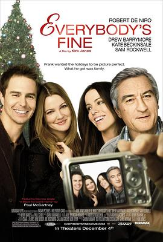

天伦之旅 / Everybody's Fine
又名：幸福窝天伦 / 人人都很好 / 大家都很好
摄影很舒服，罗伯特演得很好呀。作为孩子长大之后也会家家有本难念的经。大人孩子切换时的蒙太奇效果很棒。实际上我看错了电影，我想找的是90年的那部orz。
作品信息
| 导演 | 柯克·琼斯 |
| 编剧 | 柯克·琼斯 / 托尼诺·格拉 / 朱塞佩·托纳多雷 / 马西莫·德·丽塔 |
| 主演 | 罗伯特·德尼罗 / 凯特·贝金赛尔 / 山姆·洛克威尔 / 德鲁·巴里摩尔 / 凯瑟琳·莫宁 / 詹姆斯·弗莱恩 / 梅丽莎·里奥 / 布兰登·萨克斯顿 / 詹姆斯·墨塔夫 / 奥斯汀·拉尔西 / 莉莉·莫·辛 / 肖姆斯·戴维-菲茨帕特里克 / 达米安·杨 / 钱德勒·弗兰茨 |
| 类型 | 剧情 / 家庭 |
| 制片国家/地区 | 美国 |
| 语言 | 英语 |
| 上映日期 | 2009-12-04(美国) |
| 片长 | 99分钟 |
| IMDb | tt0780511 |
说过什么
2025-11-10 23:56:53
广播 · 看过 · ★★★★☆
摄影很舒服，罗伯特演得很好呀。作为孩子长大之后也会家家有本难念的经。大人孩子切换时的蒙太奇效果很棒。实际上我看错了电影，我想找的是90年的那部orz。
2021-12-19 16:01:23
广播 · 想看
最后一次看到是 2026-10-07T23:12:57+08:00 · 豆瓣原页